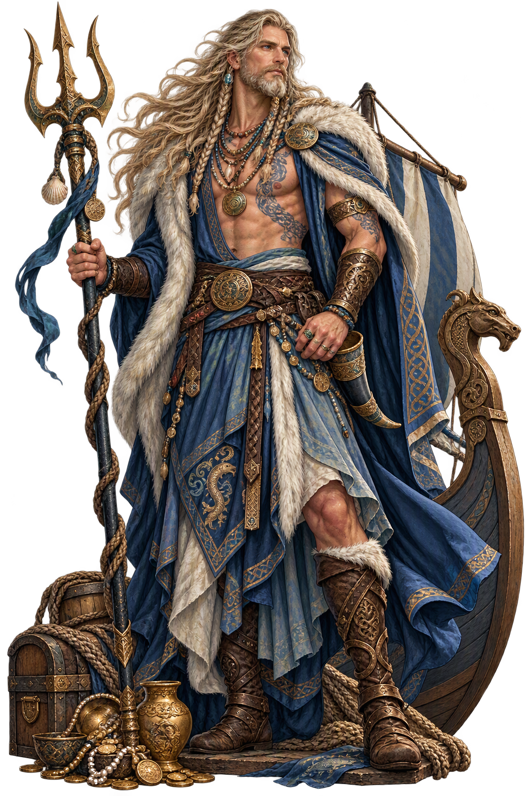
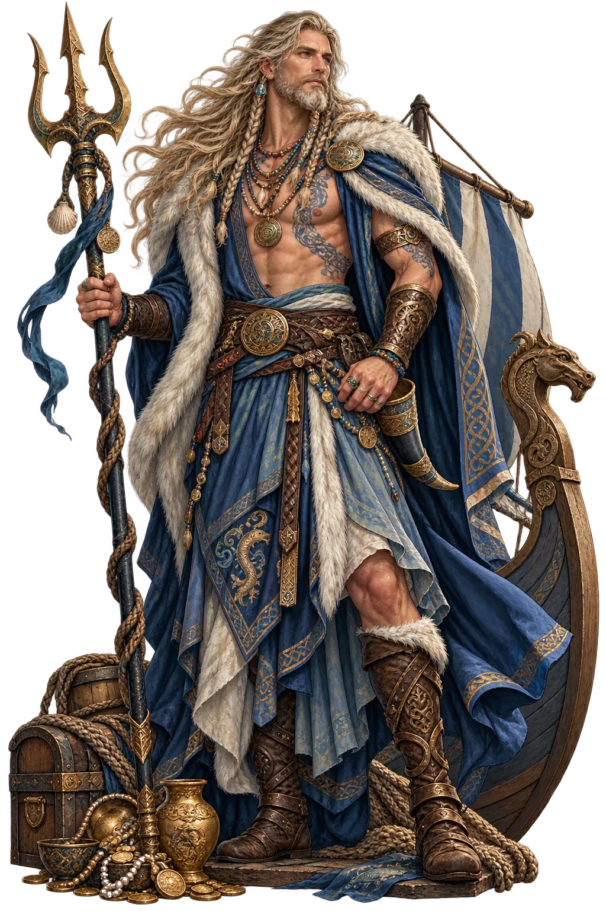

The Cult
No surviving temple, but the coastal offering-places of the Viking Age — the boat-graves’ provisions, the beach-cairns — read as his. Modern Heathen blóts at the shore address him for wind and wealth, keeping the old bargain.

Essential information about Njord, Sea, Wind, Wealth
From original script to canonical restoration
The name Njord reaches the modern world through scholarly transliteration of the norse tradition. Because the conventional spelling uses only Latin letters, its canonical and ASCII forms coincide — the tradition it carries is in the name itself, not in diacritics.
Character-by-character philological analysis
| Character | canonical | Name | Block | Phonetic Role |
|---|---|---|---|---|
| N | U+004E | Latin Capital Letter N | Basic Latin | Same, capitalized |
| j | U+006A | Latin Small Letter J | Basic Latin | Same |
| o | U+006F | Latin Small Letter O | Basic Latin | Same |
| r | U+0072 | Latin Small Letter R | Basic Latin | Same |
| d | U+0064 | Latin Small Letter D | Basic Latin | Same |
This restoration reflects fidelity to the attested tradition, not recovered diacritics: every character of Njord already survives in ASCII. What the restoration preserves is the canonical spelling itself — the form scholarship standardised.
How the sacred was kept — rites, sanctuaries, remains
No surviving temple, but the coastal offering-places of the Viking Age — the boat-graves’ provisions, the beach-cairns — read as his. Modern Heathen blóts at the shore address him for wind and wealth, keeping the old bargain.
The wagon-processions of Tacitus’ Nerthus are mirrored in the North German bog-finds — the Dejbjerg wagon, the peat-preserved carts of the Jutland ritual deposits. Njǫrðr himself leaves no image; the sea and the drowned wagons are his archive.
How Njord was imaged across the ages
A dignified elder of the sea, sometimes with the ship’s tiller or the fish; in modern art, the calm between wave-crests. His icon is the safe shore — the sea’s edge where wealth lands.
The name after its own age — transmission, translation, survival
Comparative religion uses the Njǫrðr–Nerthus question as the textbook problem of deity-evidence across genres and centuries; and the nine-nights marriage is the standard citation in studies of mythic divorce. The sea-lord has become, in the modern North, the patron invoked when the old treaties are remembered.
The Njǫrðr–Nerthus pair is the classic case of a deity’s sex and element swapped across the sources; and his hostage-role maps onto the comparative pattern of the divine guarantor (the Roman fétiales’ peace-gods). In modern Heathenry he is the Vanir’s standard-bearer, invoked at sea-rites and trade-oaths alike.
The nine-nights marriage is the Norse corpus’s most quoted domestic story — the gods’ own lesson that love does not survive incompatible homes. Scandinavia’s coastal placenames keep him; and the modern North’s shipping-prayers, where they survive, address the sea-lord by his name.
What Njord means — beyond the dictionary
Njǫrðr: the sea-lord with the soft th ending, restored here in the anglicised plain form while the canonical Norse spelling holds the flagship. The plain name is the sailor’s hail — shouted from a deck, the palatal and the ð were always going to be lost; the lexicon keeps both forms, as the shore keeps both the calm and the storm.
Common questions about Njord, Sea, Wind, Wealth, and canonical restoration
In reconstructed pronunciation, Njord is /ˈnjɔːrd/ — approximately “NYORTH” — palatal n, soft th ending.
Njord means Variant: plain anglicization (no o-slash) in the norse tradition.
Njord is associated with Lord of the Coast (He rules the sea’s edge and the fair wind — sailors and merchants call on him for safe passage and good trade.), The Hostage of Peace (Given to the Æsir to seal the peace with the Vanir; the gods’ own guarantee that oaths bind.), Father of the Twins (Freyr and Freyja are his children by his sister — the Vanir marriage-custom the Æsir could not accept.), Giver of Wealth (Sea-wealth flows from him — the Norse word for wealth and the sea’s gift are his domain together.).
Njord is written entirely in ASCII letters, so its restoration is about canonical fidelity rather than recovered diacritics: the temple fixes the name in its scholarly standard spelling, attested in the source tradition, instead of leaving it to drift.
“The Æsir–Vanir Peace” — the Gylfaginning story that anchors the mythology of Njord, told in full on the lore page.
The philological foundations of this restoration
Every claim on this page is grounded in established scholarship. The orthographic restorations follow disciplinary convention. The etymological chain follows the best available reference works. This is not invention — it is resurrection through scholarship.
You have traced the name from its earliest attestation to its canonical restoration. Now return to the myth. The story is where the name lives.
Back to Lore